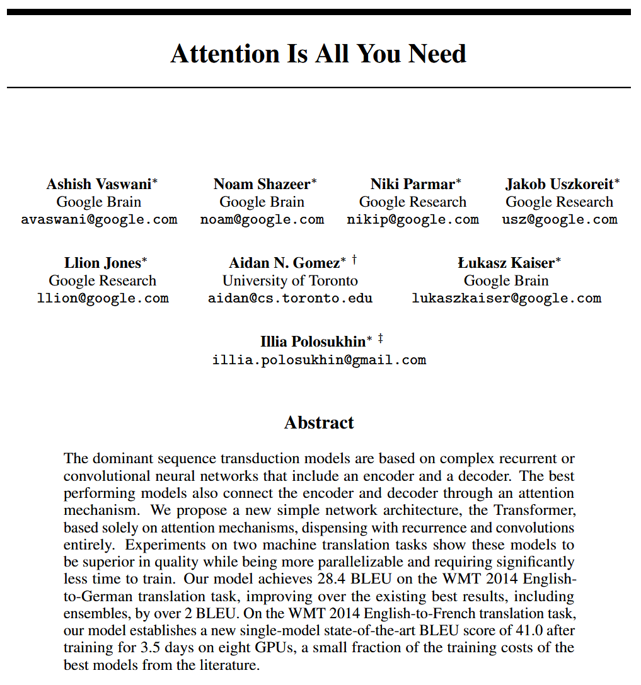

Overview
Embeddings for the rest of us
Dani Arribas-Bel, Imago, SDR-UK Data Service for Imagery
Imago
Making satellite imagery
more useful, usable, and used
across social research and policy
Today’s vibes
- Intuition behind what satellite embeddings are
- A (sales) pitch for why they’re cool
- No equations (and very little technicalities)
Disclaimer
- This is all rapidly changing
- I’m NO computer scientist
- I’ll start abstract, bear with me, it’ll have a point!
What are embeddings?
A crash course
Autoencoders
[…] neural network that is trained to attempt to copy its input to its output.
Goodfellow et al. (2016)

Late 80s, early 90s.
Deep autoencoders (for imagery)
- Within the blast radious of the deep learning revolution in the 2010s
- Deep convolutional AE, ViT (Kolesnikov et al. 2021), MAE (He et al. 2022)
- AEs start being pre-trained (the P in “ChatGPT”!)

Foundation models
- Self-supervised1
- Pre-train once, fine-tune downstream many times2
- Rising interest in Remote Sensing/Earth Observation (Rolf et al. 2024)
All the rage in 2020s (and partially why embeddings are so hot now)
(Geo-)Embeddings
- Dense, compressed vectors that retain statistical information of the input image
- Neural nets’ internal representation of an image
- “How computers see an image”
Why should I care?
Step back for a second
The year is 2026…
- We need more data more than ever!
- We have more data than ever!
- But… “Mo Data, Mo Problems”?
Embeddings’ promise (Klemmer et al. 2025)
- Dimensionality reduction/compression
- Data fusion
- Interpolation across unseen data
- Interoperability across modalities
Embeddings’ promise
- Imagery as spreadsheets!
- Imagery that fits in your laptop1
- Imagery that talks to other imagery (and other kind of data!)
Thanks!
Imago, SDR-UK Data Service for Imagery
Appendix
Challenges - But…
But… [technical challenges]
Building embeddings is still…
- … non-trivial
- … non-cheap
- … non-transferrable/comparable
BUT… [conceptual challenges]
- What’s the best1 scale?
- Are we still leaving in a world of pixels?
- What do they even mean?
Which embeddings?
An (early 2026) brief overview
Models
Models
Very flexible, the sky is the limit!
- Space, time, space-time
- Single source, multi-sensor
- Multi-modal
A (very biased) illustration…
Models
Industry:
- IBM/NASA Prithvi (Szwarcman et al. 2025)
- IBM/ESA TerraMind (Jakubik et al. 2025)
- Google AlphaEarth* (Brown et al. 2025)
- …
Academia:
- TESSERA (Feng et al. 2025)
- PRESTO (Tseng et al. 2024), Galileo (Tseng et al. 2025)
- …
Embedding products1
- Google AlphaEarth (Earth Engine)
- GeoTESSERA (Python package)
- ESA’s Major TOM (various products)
A short reading list
References
Brown, Christopher F., Michal R. Kazmierski, Valerie J. Pasquarella, et al. 2025. AlphaEarth Foundations: An Embedding Field Model for Accurate and Efficient Global Mapping from Sparse Label Data. https://arxiv.org/abs/2507.22291.
Feng, Zhengpeng, Clement Atzberger, Sadiq Jaffer, et al. 2025. TESSERA: Temporal Embeddings of Surface Spectra for Earth Representation and Analysis. https://arxiv.org/abs/2506.20380.
Gilman, Jason, Adeel Hassan, and Nathan Zimmerman. 2025. The Case for a Centralized Earth Observation Vector Embeddings Catalog. Element 84. https://github.com/Element84/vector-embeddings-catalog-whitepaper.
Goodfellow, Ian, Yoshua Bengio, and Aaron Courville. 2016. Deep Learning. MIT Press.
He, Kaiming, Xinlei Chen, Saining Xie, Yanghao Li, Piotr Dollár, and Ross Girshick. 2022. “Masked Autoencoders Are Scalable Vision Learners.” Proceedings of the IEEE/CVF Conference on Computer Vision and Pattern Recognition, 16000–16009.
Jakubik, Johannes, Felix Yang, Benedikt Blumenstiel, et al. 2025. TerraMind: Large-Scale Generative Multimodality for Earth Observation. https://arxiv.org/abs/2504.11171.
Janowicz, Krzysztof, Gengchen Mai, Weiming Huang, Rui Zhu, Ni Lao, and Ling Cai. 2025. “GeoFM: How Will Geo-Foundation Models Reshape Spatial Data Science and GeoAI?” International Journal of Geographical Information Science 39 (9): 1849–65. https://doi.org/10.1080/13658816.2025.2543038.
Klemmer, Konstantin, Esther Rolf, Marc Russwurm, et al. 2025. Earth Embeddings: Towards AI-Centric Representations of Our Planet. EarthArxiv. https://doi.org/10.31223/X5HX9S.
Kolesnikov, Alexander, Alexey Dosovitskiy, Dirk Weissenborn, et al. 2021. “An Image Is Worth 16x16 Words: Transformers for Image Recognition at Scale.”
Rolf, Esther, Konstantin Klemmer, Caleb Robinson, and Hannah Kerner. 2024. Mission Critical – Satellite Data Is a Distinct Modality in Machine Learning. https://arxiv.org/abs/2402.01444.
Szwarcman, Daniela, Sujit Roy, Paolo Fraccaro, et al. 2025. Prithvi-EO-2.0: A Versatile Multi-Temporal Foundation Model for Earth Observation Applications. https://arxiv.org/abs/2412.02732.
Tseng, Gabriel, Ruben Cartuyvels, Ivan Zvonkov, Mirali Purohit, David Rolnick, and Hannah Kerner. 2024. Lightweight, Pre-Trained Transformers for Remote Sensing Timeseries. https://arxiv.org/abs/2304.14065.
Tseng, Gabriel, Anthony Fuller, Marlena Reil, et al. 2025. Galileo: Learning Global & Local Features of Many Remote Sensing Modalities. https://arxiv.org/abs/2502.09356.